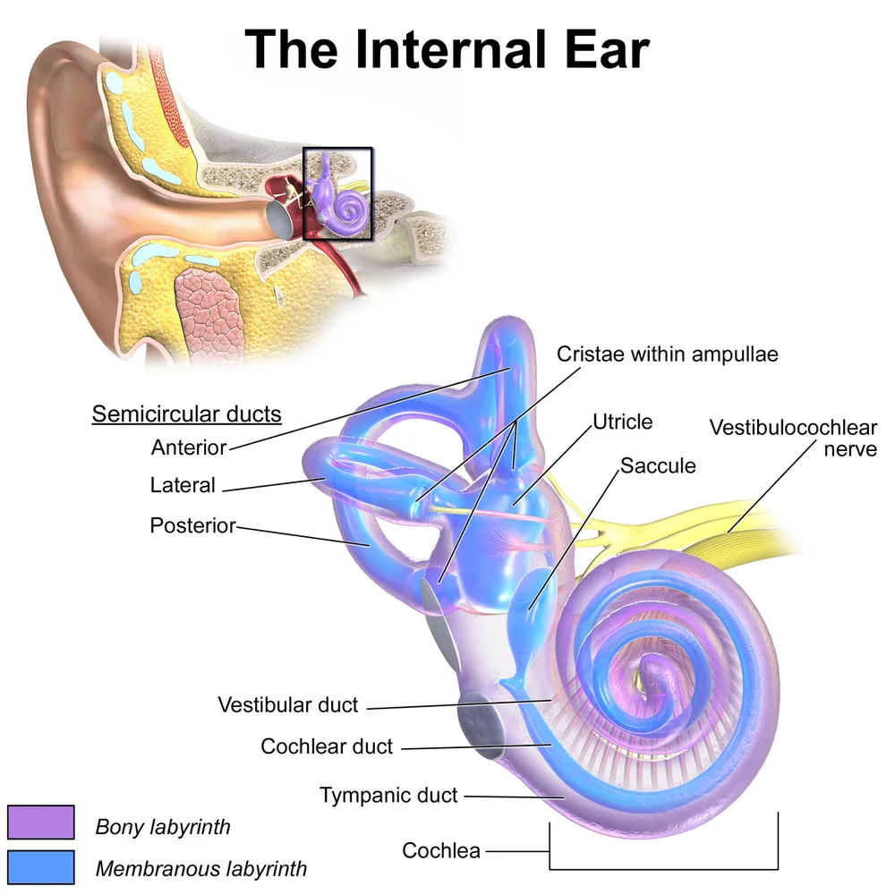
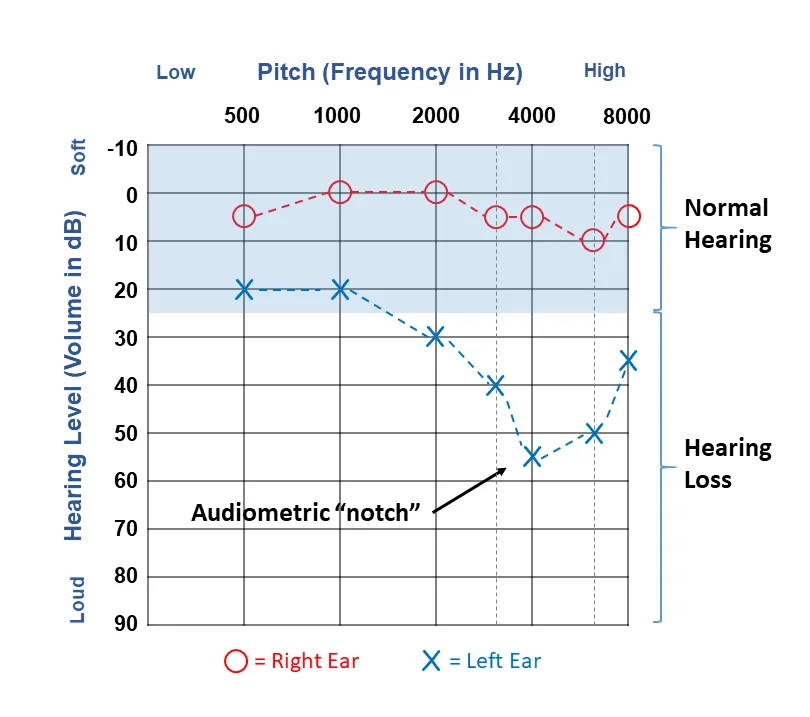

DX.5 — Surdité induite par le bruit
La surdité due au bruit se lit sur l’audiogramme : une encoche vers 4000 Hz, bilatérale, chez une personne exposée à 85 dB(A) ou plus S1. Elle ne guérit pas, si bien que la protection et le dépistage précoce priment, tandis qu’un traumatisme aigu justifie une corticothérapie rapide S1S12.
1. Définition
La surdité induite par le bruit est une perte auditive neurosensorielle irréversible, causée par une exposition sonore de longue durée ou particulièrement intense qui lèse l’oreille interne S1. La Suva la nomme « lésion auditive due au bruit » et, lorsqu’elle naît du travail, « surdité professionnelle » ou « hypoacousie professionnelle » S1S4.
2. Épidémiologie (Suisse, puis Europe)
En Suisse, la Suva estime qu’environ 200 000 personnes travaillent au-dessus de la valeur limite de 85 dB(A), dans quelque 22 000 entreprises S1S4. Les lésions auditives restent ainsi la principale catégorie de maladies professionnelles reconnues, avec plus de 800 nouveaux cas par an S4. Le tableau des chiffres suisses et européens les réunit avec leur population et leur année, puis l’histoire naturelle explique le décalage entre exposition et gêne S1S4S7.
Surdité due au bruit : chiffres suisses, puis européens
| Donnée | Population et lieu | Année | Source |
|---|---|---|---|
| Environ 200 000 salariés exposés à un bruit dangereux pour l’ouïe, dans quelque 22 000 entreprises | Suisse, estimation de la Suva | 2021 | S1 |
| Lésions auditives : 39 % des maladies professionnelles reconnues | Suisse, assurés Suva | 2019 | S4 |
| Plus de 800 nouveaux cas reconnus chaque année, hors accidents | Suisse, assurés Suva | 2019 | S4 |
| Près de 25 000 examens audiométriques par an dans les audiomobiles | Suisse, travailleurs exposés | 2021 | S1 |
| Atteinte auditive légère ou manifeste : plus de 37 % en 1973, moins de 7 % en 2014 | Suisse, personnes examinées en audiomobile | 1973–2014 | S1 |
| Port régulier des protecteurs : 17 % dans les années 1970, plus de 90 % aujourd’hui | Suisse, personnes examinées en audiomobile | 2021 | S1 |
| Troubles de l’audition chez 8,4 % de la population | Suisse, enquête suisse sur la santé | 2012/2017 | S7 |
| Acouphènes chez 10 à 18 % de la population de tous âges | Suisse, estimation des Hôpitaux universitaires de Genève (HUG) | 2025 | S6 |
| 46 % des adultes de 54 à 66 ans déclarent une exposition au bruit | Finlande, cohorte du Nord | 2012 | S13 |
Les chiffres de la Suva décrivent des assurés exposés au travail ; ils ne mesurent donc pas la surdité due aux loisirs, ce qui reste une limite des données S1S4.
La baisse des atteintes entre 1973 et 2014 accompagne la hausse du port des protecteurs ; la Suva attribue ce progrès à l’information et au conseil des personnes exposées S1.
Histoire naturelle de la surdité due au bruit
| Étape | Ce qui se passe | Conséquence pratique | Source |
|---|---|---|---|
| Dix premières années d’exposition | Les déficiences atteignent déjà les trois quarts de leur valeur finale | Le dépistage vise les moins de 40 ans | S4S3 |
| Début | La perte touche d’abord les fréquences voisines de 4 kHz | Le patient ne remarque rien au quotidien | S1S4 |
| Exposition prolongée ou intense | Les dommages s’étendent aux fréquences moyennes | La compréhension de la parole se dégrade | S1 |
| Vers 60 à 70 ans | La presbyacousie s’ajoute à la lésion ancienne | La gêne apparaît, comme un vieillissement anticipé de 10 à 20 ans | S2S4 |
| Toute étape | La lésion ne guérit ni par chirurgie ni par médicament | Seule la protection conserve l’audition | S1 |
La gêne tardive explique pourquoi le patient consulte rarement au moment où la prévention serait encore efficace S2S4.
3. Physiopathologie
Les charges sonores chroniques au-delà de 85 dB(A) ou les bruits aigus très forts lèsent les cellules ciliées et les terminaisons du nerf auditif S4. La sensibilité de l’oreille interne culmine vers 4000 Hz ; les lésions y apparaissent donc en premier, puis gagnent les fréquences moyennes S1. Le tableau des mécanismes distingue l’usure chronique au traumatisme sonore aigu, dont l’atteinte déborde parfois l’oreille interne S4S12.
Mécanismes : exposition chronique et traumatisme sonore aigu
| Mécanisme | Cause typique | Lésion | Traduction audiométrique | Source |
|---|---|---|---|---|
| Exposition chronique | Bruit de travail au-delà de 85 dB(A), répété pendant des années | Cellules ciliées et terminaisons du nerf auditif | Encoche vers 4 kHz, puis extension aux fréquences moyennes | S4S1 |
| Traumatisme sonore aigu | Coup de pistolet, airbag, détonation | Oreille interne, parfois tympan ou osselets | Surdité brusque possible, avec acouphènes | S4S12 |
| Atteinte de l’oreille moyenne | Onde de choc d’une détonation | Perforation tympanique, rupture de la chaîne ossiculaire | Composante de transmission, à chercher à l’otoscopie | S12 |
| Susceptibilité individuelle | Sensibilité génétique, distance de la source, absence de protection | Gravité variable pour une même exposition | Atteinte inégale entre collègues exposés | S12 |
La forme classique du traumatisme aigu reste une surdité neurosensorielle à tympan intact, avec une baisse typique des seuils à 3, 4, 6 et 8 kHz S12.
Oreille interne et cochlée. Cette illustration en couleurs montre le labyrinthe osseux en violet, le labyrinthe membraneux en bleu et le nerf vestibulocochléaire en jaune S16.

Le lecteur doit d’abord suivre seul la spirale de la cochlée, de sa base jusqu’à son sommet.
Sur la copie annotée, quatre repères suivent la cochlée de sa base à son sommet, puis le nerf auditif.
- Le canal cochléaire du tour basal contient les cellules ciliées des fréquences aiguës, que le bruit détruit en premier ; ce siège reste une déduction anatomique S16S1.
- L’apex cochléaire code les graves, longtemps épargnés, ce qui explique l’audiogramme normal à 500 Hz au début S16S1.
- Le nerf vestibulocochléaire porte les fibres auditives, dont les terminaisons souffrent aussi du bruit S16S4.
- Le cadre montre la place de la cochlée, enfouie dans le rocher, si bien qu’aucun geste chirurgical ne répare la lésion S16S1.
Ce que l’image décide. La topographie basale explique l’encoche aiguë et justifie un audiogramme jusqu’à 8000 Hz chez toute personne exposée S1.
4. Démarche diagnostique
La démarche part d’une plainte auditive ou d’un acouphène et cherche d’abord l’exposition au bruit, puis exclut une cause qui imposerait une conduite urgente S5S10. Le tableau de démarche précise les étapes, de l’anamnèse à l’orientation, avec le geste attendu à chacune S1S5S10. Une fenêtre d’exclusion rappelle enfin les diagnostics de la phase A qui ressemblent à une surdité due au bruit S10S11.
Démarche diagnostique, de la plainte à l’orientation
| Étape | Question posée | Geste | Résultat qui fait avancer | Source |
|---|---|---|---|---|
| 1. Délai | La perte est-elle survenue en 3 jours ou moins, il y a moins de 30 jours ? | Chronologie précise | Oui : avis oto-rhino-laryngologique (ORL) dans les 24 heures | S10 |
| 2. Exposition | Travail ou loisirs bruyants, détonation récente ? | Anamnèse professionnelle et des loisirs | Exposition de 85 dB(A) ou plus | S1S4 |
| 3. Oreille externe et moyenne | Conduit et tympan sont-ils normaux ? | Otoscopie | Conduit libre, tympan intact et mobile | S5 |
| 4. Type de surdité | Transmission ou perception ? | Acoumétrie au diapason | Surdité de perception | S5 |
| 5. Seuils | Où se situe la perte ? | Audiogramme tonal de 500 à 8000 Hz | Encoche vers 4000 Hz, bilatérale | S1 |
| 6. Symétrie | Les deux oreilles sont-elles touchées de façon semblable ? | Comparaison des courbes | Asymétrie : imagerie à discuter | S11S10 |
| 7. Orientation | Prévention, appareil ou déclaration ? | Avis ORL et contact avec la Suva | Protection, aptitude, prise en charge | S3S8 |
L’ordre compte : le délai d’apparition passe avant l’exposition, car une surdité brusque récente ne doit jamais attendre la preuve du bruit S10S5.
Ce qu’il faut exclure avant de retenir le bruit
| Diagnostic à exclure | Indice qui doit alerter | Conduite | Source |
|---|---|---|---|
| Surdité brusque neurosensorielle (DX.6, E1) | Perte installée en moins de 72 heures, d’au moins 30 dB sur 3 fréquences consécutives | Corticothérapie au plus vite, audiogramme | S5 |
| Fistule artérioveineuse durale (DX.10, E2) | Acouphène pulsatile | Imagerie | S11 |
| Schwannome vestibulaire (DX.8, E4) | Acouphène ou surdité unilatéral ou asymétrique | Imagerie par résonance magnétique (IRM) des conduits auditifs internes | S11 |
| Presbyacousie (DX.4) | Âge avancé sans exposition notable | Appareillage | S7S4 |
La presbyacousie et le bruit s’additionnent souvent chez le même patient ; le diagnostic retient alors les deux, sans opposer les causes S2S4.
5. Anamnèse ciblée et drapeaux rouges
L’anamnèse chiffre d’abord l’exposition : métier, années de travail dans le bruit, port des protecteurs, puis musique, tir et autres loisirs bruyants S1S4. Elle recherche ensuite les symptômes associés, car l’acouphène, l’hyperacousie ou une gêne dans le bruit de fond accompagnent souvent la perte S6S4. Le tableau d’anamnèse donne les questions utiles et leur poids, puis le tableau des drapeaux rouges fixe le délai d’orientation S10S11.
Questions ciblées et leur portée
| Question | Réponse qui oriente vers le bruit | Pourquoi | Source |
|---|---|---|---|
| Quel métier, depuis combien d’années, avec quels outils ? | Années dans le bruit sans protection | La lésion se constitue surtout pendant les dix premières années | S3S4 |
| Portez-vous vos protecteurs à chaque minute de bruit ? | Port intermittent | La protection exige un port systématique | S1 |
| Avez-vous entendu une détonation, un tir ou un airbag ? | Bruit aigu très fort | Le bruit aigu peut causer une surdité brusque | S4 |
| Entendez-vous un sifflement après le travail ou un concert ? | Bourdonnement transitoire | Le signal impose 12 à 24 heures de repos auditif | S4 |
| Suivez-vous une conversation dans le bruit ? | Gêne dans le bruit de fond | La perte atteint les fréquences de la parole | S1S2 |
| Votre gêne nuit-elle au sommeil, au travail ou à l’humeur ? | Détresse liée à l’acouphène | Une détresse persistante justifie un avis spécialisé | S11 |
Une réponse précise sur le port des protecteurs vaut mieux qu’un simple « oui », car des tampons mal enfoncés perdent 5 à 10 dB d’atténuation S4.
Drapeaux rouges et délai d’orientation
| Signe | Diagnostic redouté | Délai | Source |
|---|---|---|---|
| Perte installée en 3 jours ou moins, dans les 30 derniers jours | Surdité brusque | ORL ou urgences dans les 24 heures | S10 |
| Perte unilatérale avec trouble sensitif ou paralysie faciale du même côté | Accident vasculaire cérébral ou lésion de l’angle | Dans les 24 heures | S10 |
| Perte brusque datant de plus de 30 jours ou aggravation sur 4 à 90 jours | Atteinte évolutive | Avis dans les 2 semaines | S10 |
| Acouphène pulsatile persistant | Cause vasculaire | Imagerie | S11 |
| Acouphène avec surdité unilatérale ou asymétrique | Schwannome vestibulaire | Orientation spécialisée | S11 |
| Douleur ou surdité après un bruit aigu et très fort | Traumatisme sonore aigu | Médecin sans attendre | S4 |
Le bruit n’explique jamais une asymétrie franche ni un acouphène pulsatile ; ces signes renvoient aux urgences d’exclusion de la phase A S11.
Pour chiffrer l’exposition, le médecin recherche le niveau déclaré, puis la fenêtre des valeurs d’exposition rassemble côte à côte les seuils suisses et européens S1S9.
Valeurs d’exposition au bruit : Suisse et Union européenne
| Repère | Suisse (Suva) | Union européenne (directive européenne 2003/10) | Source |
|---|---|---|---|
| Seuil bas | Port recommandé chaque jour où le niveau d’exposition sonore (LEX) sur 8 heures dépasse 85 dB(A), avec information et protecteurs gratuits | Valeur inférieure déclenchant l’action : LEX,8h de 80 dB(A) et pression de crête de 112 Pa | S1S9 |
| Seuil d’action | Mesures et protecteurs obligatoires à partir de 85 dB(A) sur une année | Valeur supérieure déclenchant l’action : LEX,8h de 85 dB(A) et pression de crête de 140 Pa | S1S9 |
| Valeur limite | Valeur limite de 85 dB(A) au poste de travail | Valeur limite d’exposition : LEX,8h de 87 dB(A) et pression de crête de 200 Pa | S4S9 |
| Bruit impulsif | Prescriptions particulières pour explosions et détonations | Pression acoustique de crête fixée pour chaque seuil | S1S9 |
| Contrôle de l’ouïe | Audiomobile obligatoire jusqu’à 40 ans au-delà de 85 dB(A) | Contrôle au-delà de 85 dB(A), examen offert dès 80 dB(A) si risque | S1S9 |
La valeur européenne de 87 dB(A) tient compte de l’atténuation des protecteurs, tandis que les seuils d’action se mesurent sans protection S9. Cette lecture découle du texte de la directive européenne sur le bruit S9.
Les tableaux de niveaux sonores de la Suva couvrent environ 70 branches ; ils permettent d’estimer l’exposition d’un patient sans mesure individuelle S1.
6. Examen physique ciblé, région par région
L’examen confirme une surdité neurosensorielle isolée : conduit et tympan normaux, acoumétrie de perception, examen neurologique sans déficit S5. Chaque région a sa fenêtre : oreille externe, tympan et oreille moyenne, oreille interne au diapason et nerfs crâniens et cou S5S10.
Région 1 — oreille externe
| Geste | Résultat attendu dans la surdité due au bruit | Résultat qui change la conduite | Source |
|---|---|---|---|
| Otoscopie du conduit | Conduit libre | Cérumen obstructif : à retirer avant tout audiogramme | S5S10 |
| Inspection du pavillon | Normal | Écoulement ou otalgie : chercher une infection | S10 |
Un conduit obstrué fausse l’audiogramme ; le National Institute for Health and Care Excellence (NICE) demande donc de traiter le cérumen avant de juger une perte persistante S10.
Région 2 — tympan et oreille moyenne
| Geste | Attendu | Anomalie | Conduite | Source |
|---|---|---|---|---|
| Otoscopie pneumatique | Tympan intact et mobile | Perforation après une détonation | Avis ORL | S5S12 |
| Recherche d’un épanchement | Absent | Liquide rétrotympanique | Cause de transmission à traiter d’abord | S5 |
Après une explosion, une perforation ou une atteinte des osselets peut s’ajouter à la lésion cochléaire ; l’otoscopie sépare donc les deux atteintes S12.
Région 3 — oreille interne, acoumétrie au diapason
| Épreuve | Ce qu’elle distingue | Résultat compatible avec le bruit | Source |
|---|---|---|---|
| Acoumétrie au diapason | Surdité de perception contre surdité de transmission | Profil de perception | S5 |
| Comparaison droite-gauche | Symétrie ou asymétrie | Atteinte bilatérale et proche | S11 |
Le diapason oriente mais ne mesure pas ; l’audiogramme tonal reste indispensable pour situer l’encoche aiguë S5S1.
Région 4 — nerfs crâniens, cou et vaisseaux
| Geste | Normal attendu | Anomalie | Diagnostic à évoquer | Source |
|---|---|---|---|---|
| Motricité faciale et sensibilité de la face | Normales | Paralysie faciale ou trouble sensitif homolatéral | Accident vasculaire ou lésion de l’angle | S10 |
| Recherche de symptômes neurologiques | Absents | Déficit associé | Cause neurologique de surdité | S5 |
| Interrogatoire sur un bruit qui bat au rythme du pouls | Absent | Acouphène pulsatile | Cause vasculaire | S11 |
Un examen neurologique normal ne suffit pas devant une asymétrie ; l’imagerie se discute alors même sans signe focal S11.
7. Approche syndromique
La surdité due au bruit se range dans le syndrome de surdité de perception bilatérale progressive, à tympan normal, prédominant sur les aigus S1S5. Le tableau syndromique la compare aux autres causes du lot, avec le critère qui tranche dans chaque cas S5S7S11.
Surdité de perception : critères qui séparent les causes
| Cause | Installation | Côté | Audiogramme | Critère discriminant | Source |
|---|---|---|---|---|---|
| Surdité due au bruit (DX.5) | Lente, ou brutale après détonation | Bilatérale | Encoche vers 4 kHz | Exposition de 85 dB(A) ou plus | S1S4 |
| Presbyacousie (DX.4) | Lente | Bilatérale | Pente sur les aigus | Âge, sans exposition notable | S7S4 |
| Surdité brusque (DX.6) | Moins de 72 heures | Surtout unilatérale | Au moins 30 dB sur 3 fréquences consécutives | Rapidité d’installation | S5 |
| Schwannome vestibulaire (DX.8) | Progressive | Unilatérale | Asymétrie | IRM des conduits auditifs internes | S11S5 |
| Maladie de Ménière (DX.7) | Par crises | Unilatérale | Fluctuante | Vertiges récurrents | S5 |
Une encoche à 4 kHz n’exclut pas une autre cause ; elle impose seulement de rechercher l’exposition qui l’explique S1.
Chez l’adulte âgé, le bruit et l’âge s’additionnent souvent ; la fenêtre des situations mixtes indique comment les démêler sans perdre de temps S4S7.
Situations mixtes : bruit, âge et autre cause
| Situation | Indice | Lecture | Conduite | Source |
|---|---|---|---|---|
| Ancien ouvrier de 68 ans | Encoche ancienne et pente des aigus | Bruit et presbyacousie additionnés | Appareillage, déclaration si l’exposition est documentée | S4S1 |
| Jeune musicien | Acouphène après les concerts | Lésion débutante due aux loisirs | Protecteurs pour musiciens et repos auditif | S1S4 |
| Tireur droitier | Perte plus marquée d’un côté | Asymétrie à ne pas attribuer d’emblée au tir | IRM à discuter | S11 |
| Travailleur exposé avec vertiges | Vertiges récurrents et surdité fluctuante | Ménière possible | Avis ORL | S5 |
Les hommes âgés ont nettement plus souvent des troubles de l’audition que les femmes en Suisse, avec un écart proche de dix points de pourcentage aux âges élevés S7.
8. Diagnostic positif et critères
Aucun critère clinique publié par une société suisse ne définit seul la surdité due au bruit ; le diagnostic positif réunit donc l’exposition, l’audiogramme et l’exclusion des autres causes S1S5. Le tableau des critères rassemble les seuils réglementaires suisses et européens, puis la base légale de la reconnaissance professionnelle S1S9.
Critères et seuils, avec leur auteur et leur année
| Critère | Seuil ou contenu | Auteur, année | Ce qu’il permet |
|---|---|---|---|
| Exposition dangereuse au travail | Niveau LEX de 85 dB(A) ou plus sur une année (2000 heures) | Suva, 2021 S1 | Mesures obligatoires et protecteurs |
| Contrôle en audiomobile | LEX,2000h de 85 dB(A) ou plus, obligatoire jusqu’à 40 ans | Suva, 2021 S1 | Dépistage préventif |
| Topographie audiométrique | Lésion d’abord voisine de 4000 Hz, puis fréquences moyennes | Suva, 2021 S1 | Argument de diagnostic positif |
| Valeurs européennes | 80 dB(A), 85 dB(A) déclenchant l’action, 87 dB(A) valeur limite | Directive européenne 2003/10 S9 | Comparaison européenne |
| Maladie professionnelle | Annexe 1 de l’ordonnance sur l’assurance-accidents (OLAA) : lésions importantes de l’ouïe, travaux exposant au bruit | Suva, 2021 S1 | Reconnaissance au titre de la loi sur l’assurance-accidents (LAA) |
La loi sur l’assurance-accidents (LAA) exige une cause exclusive ou prépondérante dans l’activité professionnelle ; l’anamnèse d’exposition devient donc une pièce du dossier S1.
Ce qui ne suffit pas : une encoche isolée sans exposition, ou une exposition sans audiogramme, ce qui découle des critères ci-dessus S1.
La reconnaissance d’une surdité professionnelle suit une procédure légale propre à la Suisse ; la fenêtre des bases légales précise le rôle de chaque acteur S1.
Bases légales et procédure de reconnaissance
| Texte | Contenu utile au médecin | Conséquence pratique | Source |
|---|---|---|---|
| LAA, art. 9 | Maladie due exclusivement ou de manière prépondérante à l’activité professionnelle | L’exposition doit être documentée | S1 |
| OLAA, annexe 1 | Lésions importantes de l’ouïe : travaux exposant au bruit | La surdité due au bruit figure dans la liste | S1 |
| LAA, art. 82 | L’employeur prend les mesures nécessaires ; le travailleur porte les équipements de protection | Le port des protecteurs devient une obligation du travailleur | S1 |
| Ordonnance sur la prévention des accidents (OPA), art. 70 et 71 | La Suva assujettit les entreprises à la prévention médicale ; l’employeur fait examiner les travailleurs | Examens préventifs en audiomobile | S1 |
| OPA, art. 75 | La Suva indemnise les frais et la perte de salaire liés aux examens préventifs | L’examen ne coûte rien au travailleur astreint | S1 |
Le médecin traitant documente l’exposition et l’audiogramme ; la décision de reconnaissance appartient ensuite à l’assureur-accidents, ce qui découle de ces bases légales S1.
9. Examens complémentaires
L’audiogramme tonal reste l’examen clé : il mesure chaque oreille de 500 à 8000 Hz par paliers de 5 dB et situe l’encoche aiguë S1. Le tableau des examens ciblés précise l’indication, le seuil, l’interprétation et la conduite, puis la lecture chiffrée de l’audiogramme détaille les valeurs S1S5S11.
Examens ciblés : indication, seuil, interprétation, conduite
| Examen | Indication | Seuil ou repère | Interprétation | Conduite | Source |
|---|---|---|---|---|---|
| Audiogramme tonal (500, 1000, 2000, 3000, 4000, 6000 et 8000 Hz) | Toute personne exposée ou gênée | Seuil d’audition par paliers de 5 dB | Encoche vers 4000 Hz | Conseil, protecteurs, avis ORL | S1 |
| Audiomobile de la Suva | Exposition LEX,2000h de 85 dB(A) ou plus, avant 40 ans | Courbes de référence selon l’âge | Résultat anormal : invitation chez l’ORL | Aptitude conditionnelle si début d’hypoacousie | S1S3 |
| Audiogramme en urgence | Surdité après un bruit aigu | Au moins 30 dB sur 3 fréquences consécutives | Surdité brusque | Corticothérapie sans attendre l’examen | S5 |
| Audiogramme de contrôle | Après corticothérapie | Comparaison au premier tracé | Gain ou absence de gain | Poursuite ou réhabilitation | S5S12 |
| IRM des conduits auditifs internes | Acouphène unilatéral ou asymétrique | Asymétrie sans autre explication | Recherche d’une lésion rétrocochléaire | Avis spécialisé | S11 |
| Imagerie vasculaire | Acouphène pulsatile | Pulsatilité | Cause vasculaire | Voir DX.10 | S11 |
La non-disponibilité d’un audiogramme ne doit pas reporter la corticothérapie d’une surdité brusque ; l’examen se fait dès que possible S5.
Lecture chiffrée de l’audiogramme
| Constat | Valeur | Signification | Source |
|---|---|---|---|
| Seuils normaux sur les graves | Tracé proche de 0 à 20 dB à 500 et 1000 Hz | Basses fréquences épargnées | S15 |
| Encoche | Creux maximal vers 4000 Hz | Signature du bruit | S1S15 |
| Remontée | Seuil meilleur à 8000 Hz qu’à 4000 Hz | Oppose le bruit à la presbyacousie, dont la pente continue ; cette opposition reste une déduction | S15 |
| Extension | Atteinte des fréquences moyennes | Exposition prolongée ou intense | S1 |
| Traumatisme aigu | Baisse à 3, 4, 6 et 8 kHz | Lésion cochléaire récente | S12 |
Le tracé se lit oreille par oreille, car une encoche unilatérale franche oriente vers une autre cause ou vers un tir asymétrique, ce qui reste une déduction S11.
Chez le travailleur exposé, l’audiogramme se fait souvent dans l’audiomobile ; la fenêtre du déroulement décrit l’examen et ses suites S1S3.
Examen en audiomobile : déroulement et suites
| Temps | Contenu | Ce que le médecin en retient | Source |
|---|---|---|---|
| Information | Film sur l’usage correct et systématique des protecteurs | Le patient connaît déjà les règles de port | S1 |
| Recueil d’informations | Anamnèse personnelle et professionnelle, anciens postes compris | L’exposition passée figure au dossier | S1 |
| Audiométrie | Cabine isolée, son pur, paliers de 5 dB, 500 à 8000 Hz pour chaque oreille | Le tracé est comparable d’une année à l’autre | S1 |
| Conseil | Audiogramme remis et commenté selon les courbes de référence de l’âge | Le patient peut apporter son tracé | S1 |
| Rapport | Synthèse à l’entreprise ; rapport individuel seulement si des mesures s’imposent | Le rapport individuel signale un problème | S1S3 |
| Résultat anormal | Invitation personnelle chez un spécialiste ORL | L’ORL confirme et précise le diagnostic | S3 |
| Début d’hypoacousie | Courrier exigeant le port systématique des protecteurs | Décision d’aptitude conditionnelle | S3 |
Quatre personnes sont examinées par demi-heure pendant les heures de travail, si bien que l’examen reste court et peu contraignant S1.
Audiogramme typique avec encoche due au bruit. Cet audiogramme en couleurs porte l’oreille droite en rouge (cercles) et l’oreille gauche en bleu (croix), sur une bande bleue de normalité S15.

Le lecteur doit d’abord comparer seul les deux courbes, puis chercher le point le plus bas de la courbe bleue.
Sur la copie annotée, trois repères situent l’encoche, l’oreille saine et la remontée aiguë.
- Le repère 1 montre l’encoche de l’oreille gauche, vers 55 dB à 4000 Hz, typique du bruit S15S1.
- Le repère 2 montre l’oreille droite, restée dans la zone normale, ce qui illustre une atteinte asymétrique à expliquer S15S11.
- Le repère 3 montre la remontée à 8000 Hz, qui distingue l’encoche d’une simple pente liée à l’âge, ce qui reste une déduction S15.
Ce que l’image décide. L’encoche à 4 kHz avec remontée confirme la piste du bruit ; l’asymétrie oblige pourtant à exclure un schwannome S1S11.
10. Arbre décisionnel
L’arbre commence par le délai d’apparition, car il sépare l’urgence du bilan programmé ; il passe ensuite par l’exposition, la symétrie et l’audiogramme S10S1. Chaque nœud renvoie à une fenêtre ; le tableau décisionnel précise la conduite à chaque branche S5S11.
- Une perte brusque de moins de 30 jours, ou survenue après une détonation, impose une orientation dans les 24 heures et une corticothérapie (point 11) S10S5.
- Une perte progressive conduit à chiffrer l’exposition au bruit, au travail puis dans les loisirs S1.
- Une otoscopie anormale impose de traiter la cause externe ou moyenne avant de conclure S5S10.
- Un audiogramme avec encoche bilatérale vers 4 kHz signe la surdité due au bruit, si bien que la protection s’organise aussitôt S1.
- Une asymétrie ou un acouphène pulsatile justifient l’imagerie adaptée avant toute conclusion S11.
Arbre décisionnel détaillé
| Nœud | Si oui | Si non | Source |
|---|---|---|---|
| Perte installée en 3 jours ou moins, il y a moins de 30 jours ? | ORL dans les 24 heures | Nœud suivant | S10 |
| Bruit aigu et très fort récent avec surdité ou douleur ? | Médecin sans attendre, corticothérapie précoce | Nœud suivant | S4S12 |
| Conduit ou tympan anormal ? | Traiter la cause, puis refaire l’audiogramme | Nœud suivant | S5S10 |
| Acouphène pulsatile ? | Imagerie | Nœud suivant | S11 |
| Asymétrie inexpliquée ? | IRM des conduits auditifs internes | Nœud suivant | S11 |
| Exposition de 85 dB(A) ou plus et encoche vers 4 kHz ? | Surdité due au bruit : protection, suivi, annonce à l’assureur | Autre surdité de perception | S1 |
Le premier nœud ne dépend pas du bruit : il protège contre le retard de traitement d’une surdité brusque S10S5.
11. Prise en charge selon les recommandations suisses
11.A But
Le but est d’arrêter la progression en supprimant l’exposition dangereuse, de récupérer ce qui peut l’être après un traumatisme aigu et de compenser la perte installée S1S5. La lésion chronique ne guérit pas ; la prise en charge vise donc l’audition restante, la communication et la gêne liée à l’acouphène S1S6.
11.B Moyens
Les moyens se répartissent entre prévention technique, protection individuelle, traitement du traumatisme aigu et réhabilitation ; le tableau des moyens les classe par situation S1S5S8. La corticothérapie suit un schéma structuré, tandis que l’extrait de l’information professionnelle suisse (AIPS) de la prednisone en recopie les limites mot pour mot S5S14.
Moyens de prise en charge, par situation
| Situation | Moyen | Modalité | Responsable | Source |
|---|---|---|---|---|
| Poste bruyant | Mesures techniques de protection contre le bruit | Toujours prioritaires sur les protecteurs | Employeur | S2 |
| Bruit résiduel de 85 dB(A) ou plus | Protecteurs d’ouïe | Port systématique, choix entre plusieurs modèles | Employeur et travailleur | S1 |
| Début d’hypoacousie professionnelle | Décision d’aptitude conditionnelle | Port obligatoire, parfois d’un type précis de protecteur | Suva | S3 |
| Maladie auditive particulière | Décision d’inaptitude | Interdiction des postes bruyants, rare | Suva | S1S3 |
| Bourdonnement après une exposition | Repos auditif | 12 à 24 heures au calme | Patient | S4 |
| Surdité après un bruit aigu | Corticothérapie orale précoce | Voir le schéma structuré | Médecin, puis ORL | S12S5 |
| Perte stabilisée gênante | Appareils auditifs | Forfait de l’assurance-invalidité (AI) de 840 francs (une oreille) ou 1650 francs (deux oreilles), tous les six ans | Expert ORL reconnu par l’AI | S8 |
| Acouphène chronique | Prise en charge multidisciplinaire et thérapie cognitivo-comportementale | ORL et psychologues | HUG | S6 |
Le forfait de l’assurance-invalidité (AI) se renouvelle avant six ans seulement si un expert ORL constate une évolution notable de l’ouïe S8.
Traumatisme sonore aigu : traitement structuré
| Élément | Contenu | Origine de la donnée | Source |
|---|---|---|---|
| Molécule | Prednisone orale | Schéma du Centre hospitalier universitaire vaudois (CHUV) pour la surdité brusque, appliqué ici par analogie (déduction) | S5 |
| Posologie | Hors AIPS, fixée par l’ORL selon le schéma de la surdité brusque du CHUV, appliqué ici par analogie (déduction) S5S14 | Revue médicale suisse 2021 | S5 |
| Schéma de l’essai militaire | Corticothérapie orale précoce, hors AIPS, sans dose reprise ici S12S14 | Série israélienne, non européenne | S12 |
| Délai | Au plus vite ; moins de 24 heures dans l’essai | Meilleur gain si début précoce | S5S12 |
| Durée | 7 jours au CHUV ; 7 jours ou plus, puis décroissance, dans l’essai | Deux sources concordantes | S5S12 |
| Perte de grade II de Gardner-Robertson ou plus | Hospitalisation et corticothérapie intraveineuse de 48 heures | Schéma du CHUV | S5 |
| Contrôle | Réévaluation clinique et audiométrique au terme du traitement | CHUV | S5 |
| Critère d’échec | Absence de récupération à l’audiogramme de contrôle | Injection intratympanique de corticoïdes à envisager | S5 |
| Délai limite | Corticothérapie acceptée jusqu’à 6 semaines, puis réhabilitation seule | CHUV | S5 |
Dans l’essai militaire, les sujets traités tôt et longtemps gagnaient 13 à 14 dB en conduction osseuse à 3 et 4 kHz par rapport aux non traités S12.
Aucune recommandation suisse propre au traumatisme sonore n’a été trouvée ; l’usage du schéma de la surdité brusque reste donc une déduction à valider par l’ORL S5.
Prednisone : extrait AIPS recopié mot pour mot
| Rubrique | Texte de l’AIPS Prednisone Streuli® | Source |
|---|---|---|
| Posologie | « La posologie initiale dépend de la maladie à traiter et correspond habituellement à 5-60 mg/jour » S14 | S14 |
| Durée courte | « L’administration de glucocorticoïdes à posologie élevée n’est pas risquée à court terme (jusqu’à 10 jours) » | S14 |
| Contre-indications | « Ce médicament ne doit pas être utilisé en cas d’hypersensibilité à la prednisone ou à l’un des excipients. » | S14 |
| Grossesse | « Prednisone Streuli, à l’instar de tous les glucocorticoïdes, ne devrait être utilisé que si cela est clairement nécessaire, en particulier durant les premiers trois mois. » | S14 |
| Allaitement | « Pendant l’application systémique des corticostéroïdes on ne doit pas allaiter. » | S14 |
| Mise à jour | « Juin 2026. » | S14 |
L’AIPS de la prednisone ne mentionne pas la surdité parmi ses nombreuses indications. Sa posologie dans le traumatisme sonore reste donc hors AIPS et relève de l’ORL, qui suit le schéma du CHUV S5S14.
L’AIPS précise aussi des contre-indications lors d’une utilisation prolongée, comme l’ulcère gastro-intestinal ou le diabète de type 2, à vérifier avant toute prescription S14.
Trois volets complètent le traitement : le choix des protecteurs, l’appareillage et la prise en charge de l’acouphène S1S8S6.
Protecteurs d’ouïe : choix et règles de port
| Règle | Contenu | Erreur fréquente | Source |
|---|---|---|---|
| Port | Systématique, pour chaque minute passée dans le bruit | Retirer les protecteurs pour une tâche courte | S1 |
| Efficacité | Le bruit doit paraître au moins 50 % moins fort | Tampon trop peu enfoncé : 5 à 10 dB d’atténuation perdus | S1S4 |
| Atténuation | « Autant que nécessaire, aussi peu que possible », pour entendre voix et signaux d’alerte | Protecteur trop isolant, donc retiré | S1 |
| Choix | Plusieurs modèles proposés, adaptés au casque, aux lunettes et aux retraits fréquents | Modèle unique imposé | S1 |
| Types | Coquilles, coquilles avec limiteur, tampons en mousse, tampons à étrier, protecteurs moulés | Tampon en mousse mal roulé | S1S2 |
| Protecteurs moulés | Efficacité justifiée par une mesure sur le travailleur en cours d’année | Aucun contrôle après la fabrication | S1 |
La Suva résume la pose des tampons en deux gestes : d’abord rouler, puis insérer ; une affiche dédiée montre la technique S2.
Appareillage auditif : indications et prise en charge suisse
| Élément | Règle | Source |
|---|---|---|
| Indication | Atteinte auditive pour laquelle l’appareil aide nettement à communiquer | S8 |
| Diagnostic préalable | Perte d’ouïe constatée par un médecin ORL expert reconnu par l’AI | S8 |
| Une ou deux oreilles | Forfait monaural ou binaural selon l’examen médical | S8 |
| Montant | 840 francs pour une oreille, 1650 francs pour deux oreilles | S8 |
| Renouvellement | Tous les six ans, plus tôt si l’ouïe évolue notablement | S8 |
| Atteinte des deux oreilles | NICE propose deux appareils lorsque la perte des deux oreilles est appareillable | S10 |
| Rôle de l’audioprothésiste | Central dans le choix de l’appareil ; appareil conventionnel adapté aux surdités légères à moyennes | S5 |
L’appareil reste un moyen auxiliaire : la Suva rappelle qu’il ne remplace jamais l’ouïe humaine, ce qui renforce la prévention S2.
Acouphène associé au bruit : conduite
| Situation | Conduite | Délai | Source |
|---|---|---|---|
| Acouphène occasionnel après un concert | Repos auditif au calme, consultation si la gêne persiste | 12 à 24 heures | S6S4 |
| Acouphène avec perte auditive | Appareil auditif pour corriger l’audition, cortisone possible en phase aiguë | Phase aiguë | S6 |
| Acouphène chronique | Équipe ORL et psychologues, thérapie cognitivo-comportementale | Programmé | S6 |
| Détresse persistante malgré le soutien initial | Évaluation spécialisée de l’acouphène | Dans les 2 semaines | S11 |
| Acouphène unilatéral ou pulsatile | Recherche d’une autre cause | Selon le signe | S11 |
Les HUG décrivent une habituation naturelle à l’acouphène avec le temps, qui accompagne les traitements et réduit la souffrance chez la grande majorité des patients S6.
11.C Surveillance
La surveillance suit deux rythmes : l’audiogramme de contrôle après un traumatisme aigu, puis le suivi audiométrique régulier de la personne exposée S5S1. Le calendrier de surveillance précise chaque échéance, l’examen et le critère qui change la conduite S1S3S5.
Calendrier de surveillance
| Échéance | Examen | Critère de décision | Conduite | Source |
|---|---|---|---|---|
| Fin de la corticothérapie (7 jours) | Audiogramme et examen clinique | Récupération ou non | Arrêt, ou injection intratympanique à discuter | S5 |
| Environ 1 mois après le traumatisme | Audiogramme | Gain des seuils aigus | Bilan de la récupération | S12 |
| 6 mois | Audiogramme | Perte considérée comme stabilisée | Réhabilitation auditive | S5 |
| Avant 40 ans si exposé ; périodicité : À vérifier (Suva) | Audiomobile de la Suva | Résultat anormal | Avis ORL, aptitude conditionnelle | S1S3 |
| Grossesse annoncée | Évaluation du poste | LEX,8h de 85 dB(A) ou plus | Changement de poste | S1S2 |
Lorsque les résultats anormaux se multiplient dans une entreprise, la Suva enquête sur les postes et vérifie les mesures de protection S3.
11.D Pronostic
La perte chronique est définitive, mais elle cesse de progresser lorsque l’exposition dangereuse disparaît ; la protection garde donc tout son sens, même tard S1. Après un traumatisme aigu, l’audition peut encore évoluer pendant des mois ; la perte se considère comme stabilisée à 6 mois S5. Le gain sous corticothérapie précoce paraît plus net chez les patients dont la perte initiale dépasse 35 dB, selon la série israélienne S12.
12. Prévention
La prévention suit un ordre fixe : éviter le bruit à la source, limiter sa propagation, puis protéger les personnes par l’organisation et les protecteurs S4S2. Le tableau de prévention distingue la prévention primaire, secondaire et tertiaire, avec les seuils suisses et européens S1S9.
Prévention primaire, secondaire et tertiaire
| Niveau | Mesure | Seuil ou modalité | Source |
|---|---|---|---|
| Primaire | Machines silencieuses, encoffrement, locaux séparés | Mesures techniques prioritaires | S2S4 |
| Primaire | Protecteurs d’ouïe | Obligatoires à partir de 85 dB(A), portés chaque minute passée dans le bruit | S1 |
| Primaire | Grossesse | Aucun poste à LEX,8h de 85 dB(A) ou plus | S1S2 |
| Primaire | Loisirs | Protecteurs pendant concerts, discothèques et fanfares | S3 |
| Secondaire | Audiomobile | Obligatoire jusqu’à 40 ans si LEX,2000h de 85 dB(A) ou plus | S1 |
| Secondaire | Surveillance européenne | Contrôle de l’ouïe au-delà de 85 dB(A) ; examen offert dès 80 dB(A) si risque | S9 |
| Tertiaire | Appareillage et gestion de l’acouphène | Forfait AI, thérapie cognitivo-comportementale | S8S6 |
La Suva juge les applications de mesure sonore pour téléphone peu fiables ; l’évaluation du poste passe par ses tableaux de niveaux sonores ou une mesure réelle S2.
13. Points clés
- La surdité due au bruit est neurosensorielle, irréversible et longtemps silencieuse, car la gêne n’apparaît souvent que vers 60 ans S1S2.
- Le seuil suisse de danger est de 85 dB(A) ; il déclenche les protecteurs et le contrôle en audiomobile avant 40 ans S1.
- L’audiogramme montre une encoche vers 4000 Hz, puis une extension aux fréquences moyennes S1.
- Une surdité récente après un bruit aigu impose une consultation sans attendre et une corticothérapie précoce S4S12.
- Une asymétrie ou un acouphène pulsatile ne s’attribuent pas au bruit avant l’imagerie S11.
- La surdité professionnelle figure dans l’annexe 1 de l’ordonnance sur l’assurance-accidents (OLAA) S1.
14. Pièges et questions fréquentes à l'examen fédéral suisse
| Question | Bonne réponse | Raison |
|---|---|---|
| Un menuisier de 35 ans entend mal dans le bruit : quel examen demander ? | Un audiogramme tonal de 500 à 8000 Hz. | Il situe l’encoche vers 4000 Hz (point 9) S1 |
| Quel seuil d’exposition rend les protecteurs obligatoires en Suisse ? | 85 dB(A). | C’est la valeur limite de la Suva (point 8) S1 |
| Jusqu’à quel âge le contrôle en audiomobile est-il obligatoire ? | 40 ans. | La lésion se prévient encore à cet âge (point 12) S1 |
| Un soldat a une surdité après un tir : quand débuter la prednisone ? | Au plus vite, idéalement avant 24 heures. | Le gain est meilleur si le traitement est précoce (point 11) S12 |
| Le traitement corticoïde du traumatisme sonore figure-t-il dans les indications de l’AIPS de la prednisone ? S5S14 | Non : il reste hors AIPS, et l’ORL fixe le schéma. | L’AIPS ne vise pas la surdité (point 11) S5S14 |
| Une encoche unilatérale à 4 kHz suffit-elle à conclure au bruit ? | Non. | L’asymétrie impose de discuter une IRM (point 7) S11 |
| Une employée enceinte travaille à 88 dB(A) : que faire ? | Changer de poste. | Aucun poste à 85 dB(A) ou plus pendant la grossesse (point 12) S1 |
| Combien l’AI verse-t-elle pour deux appareils auditifs ? | 1650 francs, tous les six ans. | C’est le forfait binaural (point 11) S8 |
| Que conseiller après un concert avec sifflement ? | 12 à 24 heures de repos au calme. | Une douleur persistante justifie une consultation (point 11) S4 |
| Pourquoi un diagnostic tardif est-il fréquent ? | La gêne n’apparaît qu’avec la presbyacousie. | Les lésions datent souvent de la jeunesse (point 2) S2 |
Sources
Toutes les sources de ce cours ont été consultées et datées le 13.11.2026.
- [S1] Suva, division médecine du travail. Prévention des surdités professionnelles, brochure 1909-1.f, 1re édition 1989, édition revue et corrigée de février 2021. suva.ch, consulté le 13.11.2026.
- [S2] Suva. Bruit au poste de travail, page de prévention sans date de version affichée. suva.ch, consulté le 13.11.2026.
- [S3] Suva. Test auditif dans l’audiomobile, page de prévention sans date de version affichée. suva.ch, consulté le 13.11.2026.
- [S4] Suva. Prévenir les lésions auditives, article d’actualité de 2019. suva.ch, consulté le 13.11.2026.
- [S5] Gombert E, George M, Maire R, Guilcher P (Centre hospitalier universitaire vaudois, CHUV). Surdité brusque : diagnostic et prise en charge en 2021. Rev Med Suisse 2021;17(753):1694-1700. doi:10.53738/REVMED.2021.17.753.1694. revmed.ch, consulté le 13.11.2026.
- [S6] Hôpitaux universitaires de Genève (HUG), service d’ORL et de chirurgie cervico-faciale. Acouphènes, mise à jour du 26.02.2025. hug.ch, consulté le 13.11.2026.
- [S7] Observatoire suisse de la santé (Obsan). Déficiences auditives et visuelles en Suisse, Obsan Bulletin 03/2022 (données de l’enquête suisse sur la santé 2012/2017). obsan.admin.ch, consulté le 13.11.2026.
- [S8] Centre d’information AVS/AI. Mémento 4.08 « Appareils auditifs de l’AI », état au 1er janvier 2023. ahv-iv.ch, consulté le 13.11.2026.
- [S9] Parlement européen et Conseil. Directive 2003/10/CE du 6 février 2003 concernant les prescriptions minimales de sécurité et de santé relatives à l’exposition des travailleurs aux risques dus aux agents physiques (bruit), texte consolidé lu sur EUR-Lex. eur-lex.europa.eu, consulté le 13.11.2026.
- [S10] National Institute for Health and Care Excellence (NICE), Royaume-Uni. NG98 — Hearing loss in adults: assessment and management, 21.06.2018, mise à jour 02.10.2023. nice.org.uk, consulté le 13.11.2026.
- [S11] National Institute for Health and Care Excellence (NICE), Royaume-Uni. NG155 — Tinnitus: assessment and management, 11.03.2020. nice.org.uk, consulté le 13.11.2026.
- [S12] Zloczower E, et al. Efficacy of oral steroids for acute acoustic trauma. Audiol Neurootol 2022;27(4):312-320, texte intégral lu (PMC9501729 ; service de santé de l’armée israélienne, source non européenne retenue faute d’essai suisse). doi:10.1159/000522051. doi.org, consulté le 13.11.2026.
- [S13] Hannula S, Bloigu R, et al. Ear diseases and other risk factors for hearing impairment among adults: an epidemiological study. Int J Audiol 2012, résumé lu (PubMed 22934931, cohorte finlandaise). doi:10.3109/14992027.2012.707334. doi.org, consulté le 13.11.2026.
- [S14] Swissmedic, information professionnelle (AIPS) Prednisone Streuli® comprimés (prednisone), n° 29349, Streuli Pharma AG, mise à jour juin 2026, lue le 13.11.2026. https://files.refdata.ch/simis-public-prod/MedicinalDocuments/20fd4e0534634d9a939cba4c8509130b-fr.html
- [S15] Themann CL, National Institute for Occupational Safety and Health (NIOSH, États-Unis, source non européenne). Typical audiometric « noise notch », 23.03.2022, domaine public, Wikimedia Commons. commons.wikimedia.org, consulté le 13.11.2026.
- [S16] Blausen.com staff (2014). Blausen 0329 EarAnatomy InternalEar, Medical gallery of Blausen Medical 2014, CC BY 3.0, Wikimedia Commons. commons.wikimedia.org, consulté le 13.11.2026.